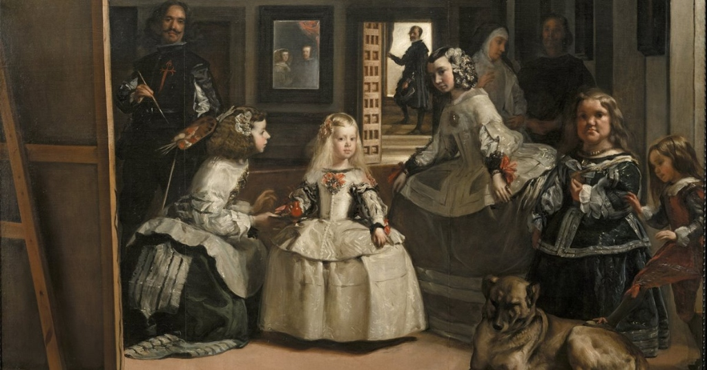
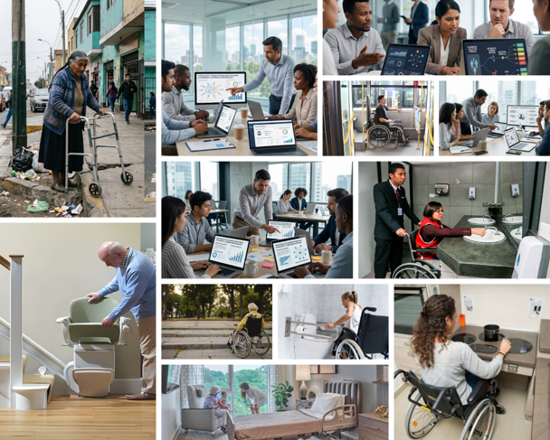
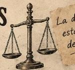
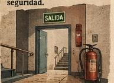
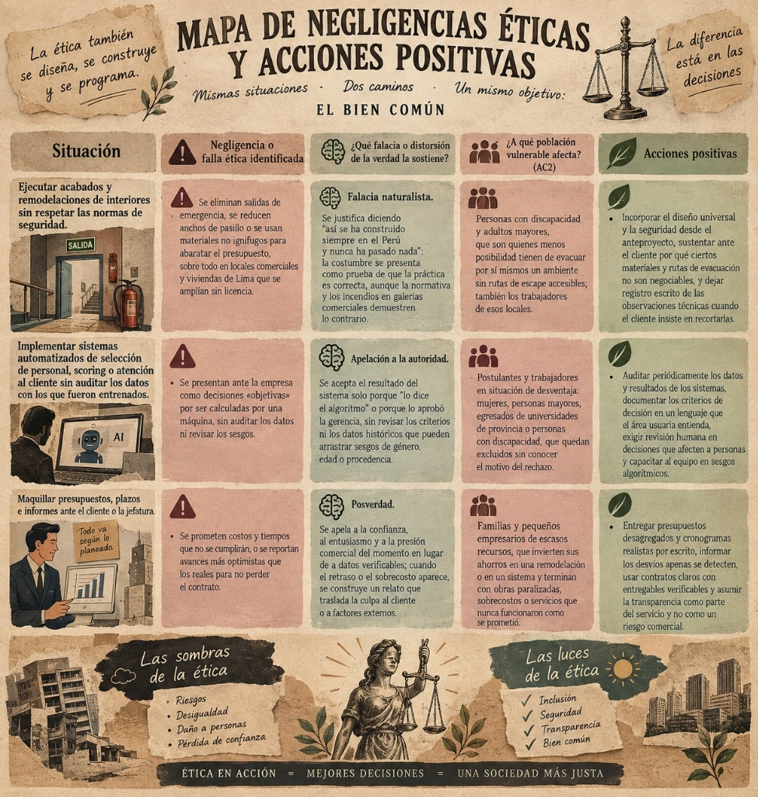

Propósito Profesional
Nuestro propósito profesional va más allá de las palabras: busca articular la excelencia técnica con el bienestar integral y la dignidad de las personas. Como equipo interdisciplinario que integra la Arquitectura de Interiores y la Ingeniería Empresarial y de Sistemas, representamos nuestra identidad y compromiso deontológico a través de la obra cumbre de Diego Velázquez: Las Meninas (1656). En ella encontramos una poderosa metáfora viva de aquello que une a ambas profesiones: el rigor de una estructura invisible que sostiene el hábitat y los sistemas, la centralidad innegociable del ser humano y la responsabilidad ética de abrir nuestras creaciones al servicio y transparencia de la sociedad.
Las Meninas: La estructura invisible, la perspectiva humana y la arquitectura de sistemas
Haz clic en los números dorados (1 al 4) sobre el lienzo para abrir la sustentación ética detallada que vincula simultáneamente a ambas carreras.

Vinculación: Arquitectura de Interiores
- • La estructura oculta sobre la cosmética: El bastidor simboliza que la belleza de un recinto no tiene valor ético si sus muros, cálculo sismorresistente, cableado y rutas de evacuación no resguardan la integridad física de las personas.
- • El habitante en el centro y diseño universal: El espejo y los personajes reflejan que el diseño interior existe para brindar cobijo digno y bienestar cotidiano a niños, adultos mayores y personas con discapacidad sin barreras arquitectónicas.
Vinculación: Ing. Empresarial y de Sistemas
- • La arquitectura de software invisible: Al igual que el lienzo visto por detrás, el backend, las bases de datos y la seguridad lógica son los cimientos invisibles que garantizan que el sistema no falle ni vulnere la información confidencial del usuario.
- • Algoritmos humanos y transparencia pública: El espejo y la puerta abierta recuerdan que ningún sistema o IA debe operar como una caja negra inaccesible: los algoritmos deben auditarse para no discriminar y rendir cuentas ante la sociedad.
En Las Meninas, Velázquez no se limita a pintar una escena: deconstruye el acto mismo de crear, mostrando el soporte estructural, el observador como protagonista y la luz exterior. Para nuestro equipo interdisciplinario, esta obra encarna que tanto proyectar un hábitat físico habitable como estructurar un sistema empresarial son actos de profunda responsabilidad moral: lo primordial nunca radica en el alarde superficial ni en la rentabilidad inmediata, sino en la honestidad técnica de la estructura interna consagrada a la seguridad, justicia y dignidad de cada ser humano.
Conexión Teórica: Aristóteles y el Sentido Relacional de la Ética
Responsabilidad Ética: Mapa de Rostros y Realidades Vulnerables
Sin el reconocimiento de los rostros vulnerables sobre quienes impacta nuestra labor, toda formulación de propósito ético corre el riesgo de quedarse en una abstracción retórica. A partir de la evidencia construida en el Aprendizaje Colaborativo 2, presentamos nuestro mapa de empatía visual sobre el collage oficial de realidades peruanas, articulando la experiencia de cada grupo con el marco kantiano de la dignidad humana y los cuatro principios de la bioética.
Mosaico de Rostros Vulnerables
Haz clic en los puntos interactivos sobre los rostros o en las pestañas superiores

Marco Teórico: La Persona como Fin, Dignidad Ontológica y Principios Bioéticos (AC2)
Kant (1785/2012) establece que la persona debe ser tratada siempre como un fin en sí misma y jamás como un mero medio. La dignidad ontológica es incondicional, inherente e inalienable a todo ser humano. En contraste, la dignidad utilitaria reduce al individuo a su utilidad económica o eficiencia operativa. Suprimir salidas de emergencia, estrechar pasadizos accesibles o descartar postulantes mediante algoritmos opacos para abaratar costos instrumentaliza a seres humanos vulnerables como objetos descartables.
La labor interdisciplinaria debe regirse por los principios bioéticos (Beauchamp & Childress, 2019): no maleficencia (prohibición estricta de generar daños físicos por barreras arquitectónicas o daños morales por sesgos de datos), beneficencia (deber activo de maximizar el bienestar del usuario), autonomía (garantizar movilidad y decisiones independientes) y justicia distributiva (equidad irrestricta de oportunidades). Los Derechos Humanos (ONU, 1948) representan el piso ético irrenunciable que ningún interés comercial puede subordinar.
Compromiso Deontológico del Equipo ante estas Vulnerabilidades
«Como equipo, entendemos que, al igual que en Las Meninas, lo importante no siempre está a simple vista, sino también en lo que hay detrás del lienzo. Nos comprometemos a trabajar con honestidad y responsabilidad, creando espacios seguros y accesibles, y sistemas justos que no perjudiquen a las personas. Buscamos que la accesibilidad, la equidad y el bienestar estén presentes desde el inicio, poniendo siempre a la persona como prioridad.»
Marco Axiológico: Jerarquía de Valores de Max Scheler
El filósofo alemán Max Scheler (1916/2001) postuló que los valores poseen un orden objetivo y trascendente que no depende de la mera convención subjetiva. Sin embargo, en el ejercicio cotidiano de las profesiones en el Perú, esta pirámide suele invertirse: la rentabilidad económica inmediata desplaza la salvaguarda de la vida y la justicia distributiva. Analizamos cada estrato de la escala scheleriana y fundamentamos nuestra posición axiológica ante este conflicto.
Pirámide Axiológica de Scheler
Orden ObjetivoHaz clic en cada estrato para visualizar su manifestación en arquitectura y sistemas:
Conexión Teórica: Relativismo Moral vs. Universalismo Ético en el Ejercicio Profesional
El relativismo moral argumenta que los juicios éticos dependen de costumbres contingentes (Gaarder, 1991). En el Perú, este criterio suele encubrir malas prácticas: «así se trabaja aquí» o «la informalidad es inevitable». Esa postura diluye la responsabilidad profesional y subordina el deber ético a la complacencia mercantil.
Reivindicamos el universalismo ético fundamentado en el orden axiológico de Scheler (1916/2001). La integridad física, la accesibilidad y la equidad algorítmica no son relativas ni negociables según el presupuesto. Son exigencias universales: un espacio o sistema debe ser seguro y justo en cualquier contexto del país.
La Tensión Axiológica: Valores Vitales vs. Económicos
El conflicto axiológico neurálgico en el contexto laboral peruano se suscita entre los valores vitales (salud, seguridad, bienestar integral de las personas) y los valores económicos (reducción de costos operativos y maximización de utilidades a corto plazo). En el mercado nacional, constructoras y empresas suelen postergar medidas de seguridad contra incendios, ventilación e iluminación natural en obras de remodelación comercial, o prescindir de protocolos de validación en sistemas automatizados para abaratar presupuestos y asegurar contratos rápidos.
Esta práctica normalizada en el Perú instrumentaliza la vida de clientes, trabajadores y transeúntes. Anteponiendo el lucro financiero a la incolumidad física, se distorsiona la jerarquía de Scheler y se vulnera el principio elemental de que la economía debe ser un medio instrumental al servicio de la vida, y jamás a la inversa.
Declaración de Posición Axiológica del Equipo
«Como equipo multidisciplinario, declaramos que en nuestro ejercicio profesional priorizaremos de forma innegociable los valores vitales y espirituales (la seguridad física, el bienestar humano integral y la justicia distributiva) por encima de los meramente económicos, sin desconocer que la eficiencia y la sostenibilidad financiera son necesarias para viabilizar nuestra práctica técnica.»
En coherencia con la metáfora de Las Meninas, sostenemos que el beneficio de una obra nunca justificará ocultar riesgos ni reducir la seguridad por ahorrar costos. La persona humana siempre será nuestra prioridad en cada decisión.
Mapa Crítico Profesional: Mapa de Negligencias Éticas y Acciones Positivas
El verdadero pensamiento ético exige honestidad intelectual para reconocer las fallas y negligencias reales del propio campo laboral, desmantelando los razonamientos falaces y la posverdad que pretenden normalizarlas. Presentamos nuestra matriz infográfica que confronta dialécticamente las tres situaciones críticas más recurrentes en el Perú frente a las acciones positivas con las que nos comprometemos como futuros profesionales, garantizando que la dignidad humana, la transparencia técnica y la seguridad comunitaria prevalezcan sobre cualquier interés instrumental.
Mapa de Negligencias Éticas y Acciones Positivas

Ejecutar acabados y remodelaciones de interiores sin respetar las normas de seguridad.

🚪 Ruta de evacuaciónSe eliminan salidas de emergencia, se reducen anchos de pasillo o se usan materiales no ignífugos para abaratar el presupuesto, sobre todo en locales comerciales y viviendas de Lima que se amplían sin licencia.
Se justifica diciendo «así se ha construido siempre en el Perú y nunca ha pasado nada»: la costumbre se presenta como prueba de que la práctica es correcta, aunque la normativa y los incendios en galerías comerciales demuestren lo contrario.
Personas con discapacidad y adultos mayores, que son quienes menos posibilidad tienen de evacuar por sí mismos un ambiente sin rutas de escape accesibles; también los trabajadores de esos locales.
- • Incorporar el diseño universal y la seguridad desde el anteproyecto preliminar.
- • Sustentar ante el cliente por qué ciertos materiales ignífugos y rutas de evacuación no son negociables.
- • Dejar registro escrito de las observaciones técnicas cuando el cliente insiste en recortarlas.
Implementar sistemas automatizados de selección de personal, scoring o atención al cliente sin auditar los datos con los que fueron entrenados.
Se presentan ante la empresa como decisiones «objetivas» por ser calculadas por una máquina, sin auditar los datos ni revisar los sesgos.
Se acepta el resultado del sistema solo porque «lo dice el algoritmo» o porque lo aprobó la gerencia, sin revisar los criterios ni los datos históricos que pueden arrastrar sesgos de género, edad o procedencia.
Postulantes y trabajadores en situación de desventaja: mujeres, personas mayores, egresados de universidades de provincia o personas con discapacidad, que quedan excluidos sin conocer el motivo del rechazo.
- • Auditar periódicamente los datos y resultados de los modelos predictivos.
- • Documentar los criterios de decisión en un lenguaje comprensible para el área usuaria.
- • Exigir revisión humana obligatoria en decisiones que afecten a personas y capacitar al equipo en sesgos algorítmicos.
Maquillar presupuestos, plazos e informes ante el cliente o la jefatura.
Se prometen costos y tiempos que no se cumplirán, o se reportan avances más optimistas que los reales para no perder el contrato.
Se apela a la confianza, al entusiasmo y a la presión comercial del momento en lugar de a datos verificables; cuando el retraso o el sobrecosto aparece, se construye un relato que traslada la culpa al cliente o a factores externos.
Familias y pequeños empresarios de escasos recursos, que invierten sus ahorros en una remodelación o en un sistema y terminan con obras paralizadas, sobrecostos o servicios que nunca funcionaron como se prometió.
- • Entregar presupuestos desagregados y cronogramas realistas por escrito.
- • Informar los desvíos apenas se detecten sin ocultamiento.
- • Usar contratos claros con entregables verificables y asumir la transparencia como parte del servicio y no como un riesgo comercial.
Las sombras de la ética
- Riesgos
- Desigualdad
- Daño a personas
- Pérdida de confianza
Dignidad & Equidad
"El ejercicio profesional solo adquiere valor cuando se consagra al bien común"
Las luces de la ética
- ✓ Inclusión
- ✓ Seguridad
- ✓ Transparencia
- ✓ Bien común
Lámina Infográfica Original: Mapa de Negligencias y Acciones Positivas
Diseño infográfico de síntesis elaborado por el equipo — Formato editorial vintage

«¿Estamos entregando un proyecto realmente seguro y honesto, o solo uno que el cliente puede pagar y aprobar rápido? Es decir, ¿cuándo dejamos de llamar “ajuste de presupuesto” a lo que en realidad es quitarle seguridad, accesibilidad o verdad a las personas que usarán ese espacio o ese sistema?»
Esta pregunta socrática desmonta el supuesto normalizado de que la concesión de calidad es un «acuerdo pragmático de mercado». Nos interpela a reconocer que cada recorte técnico arbitrario tiene un costo humano diferido que pagan los más vulnerables.
«Elegimos Las Meninas porque nos muestra que una obra no depende únicamente de lo que vemos, sino también de todo lo que sucede detrás de ella. Esta idea representa nuestro compromiso de actuar con ética, reconociendo los errores y evitando que la costumbre, la presión económica o la falta de atención nos lleven a tomar decisiones que perjudiquen a las personas. Por ello, buscamos que nuestro trabajo refleje responsabilidad, honestidad y respeto por los demás.»
Referencias
Aristóteles. (2014). Ética a Nicómaco (J. Pallí Bonet, Trad.). Editorial Gredos. (Obra original publicada ca. 349 a.C.).
Beauchamp, T. L., & Childress, J. F. (2019). Principles of biomedical ethics (8.ª ed.). Oxford University Press.
Gaarder, J. (1991). El mundo de Sofía: Novela sobre la historia de la filosofía. Ediciones Siruela.
Giusti, M. (2007). El sentido de la ética. Pontificia Universidad Católica del Perú, Fondo Editorial.
Instituto Nacional de Estadística e Informática [INEI]. (2017). Perfil sociodemográfico de la población con discapacidad en el Perú: Censos Nacionales 2017. INEI.
Instituto Nacional de Estadística e Informática [INEI]. (2023). Situación de la población adulta mayor: Informe técnico N° 4. INEI.
Kant, I. (2012). Fundamentación de la metafísica de las costumbres (M. García Morente, Trad.). Alianza Editorial. (Obra original publicada en 1785).
Organización de las Naciones Unidas [ONU]. (1948). Declaración Universal de los Derechos Humanos. Asamblea General de las Naciones Unidas.
Platón. (2003). La República, Libro VII: Alegoría de la caverna (C. Eggers Lan, Trad.). Editorial Gredos.
Radio Ambulante. (2020). Caravana de la desinformación: Narrativas y posverdad [Episodio de podcast]. NPR.
Scheler, M. (2001). Ética: Nuevo ensayo de fundamentación de un personalismo ético (H. Rodríguez Sanz, Trad.). Caparrós Editores. (Obra original publicada en 1916).
Velázquez, D. (1656). Las Meninas [Óleo sobre lienzo]. Museo Nacional del Prado, Madrid, España. https://www.museodelprado.es/coleccion/obra-de-arte/las-meninas/9fdc7800-9ade-48b0-ab8b-edee94ea877f